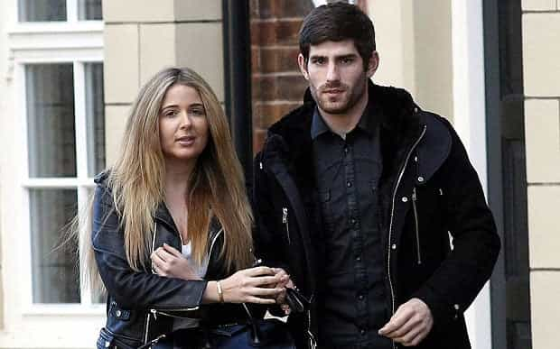

< < < Back
British Soccer Star Ched Evans Found Not Guilty Of Rape After Years Of Abuse From Feminists – Return Of Kings
British soccer player Ched Evans, having endured years of hell, has finally been exonerated of “rape.” Last Friday, following a dramatic retrial in Cardiff, a jury found the Welshman, who has represented his country 13 times at the elite level and another 17 times at junior level, not guilty. Convicted in 2012 after a hotel sexual encounter, he spent two and a half years in prison before being released in October 2014. A subsequent appeal earlier this year had quashed that same conviction.
Throughout this harrowing time, feminists led a vigilante-style campaign to strip Evans of any ability to earn a good income. When third-division club Sheffield United showed an interest and allowed him to train with their squad post-prison, the proverbial knives came out. British track and field athlete Jessica Ennis-Hill, for example, effectively tried to blackmail Sheffield United, threatening to have her name removed from a stand at their Bramall Lane stadium. Thankfully, the club issued a figurative “Who gives a fuck, sweetheart” by renaming the stand anyway. The furor nevertheless led to Evans being dropped.
Some positives emerged, though. Sheffield United’s co-chairman Jim Phipps was unequivocal about the extreme pressure placed on the club to ditch Evans. He described it as “mob-like behavior,” a frank account he should be commended for in such politically correct times. Countless other people, and not just diehard soccer fans, flooded social media and news story comments with messages of support for Evans. The “CNN effect” I first described a long time ago, whereby regular commentators are happy to buck the leftist line of many a media publication, was alive and well. No doubt that backing helped the Welshman through an incredibly sad period of his life.
Feminist anger is as hypocritical as it gets
“Rules are meant to benefit women!”
The central gripe of feminists over Ched Evans’ exoneration is that the Court of Appeal heard from two of the accuser’s ex-lovers. Normally this is not allowed under British “rape shield” laws (a terrible euphemism that often only prevents rightful scrutiny of claims), but last year a decision of the Criminal Cases Review Commission (CCRC) triggered the appeal based on this new evidence. Both men’s testimonies about their sexual experiences with the accuser were strikingly similar to the situation involving Evans.
What is far more appalling than an accuser’s sexual history being evaluated at a trial is the use of “bad character” witnesses against an accused. You know, the person facing prison if found guilty. This is exactly what happened during the British prosecution of the now convicted Rolf Harris. While few in society shed any tears for the jailed Australian entertainer, what should have shocked everyone was the ability of women aside from the relevant accusers to testify at the trial that Harris sexually abused them. Plenty of other men at the mercy of British courts also find themselves railroaded by obscure sexual accusations that are not even related to the charges they face in court. It is nothing short of a legal travesty that this kind of circus is allowed to take place, no matter what crime one is accused of.
The British system is as broken as it gets—Evans’ family had to get him justice

More people, just like Ched Evans’ family, will have to resort to private investigators to clear their or their loved ones’ names.
So how did the new evidence that helped exonerate Evans make its way to the authorities? His family had to hire private investigators. The double-edged sword of modern “justice” is that courts are too happy to convict men using an absolute paucity of evidence, bar the testimony of an accuser, and any chance of overturning that conviction routinely depends on you or loved ones finding the smoking gun. Ched Evans may not have been earning the salary of a Lionel Messi or Cristiano Ronaldo as a soccer player, but he is, dare I say it, one of the lucky ones. A truly Average Joe fighting for his innocence is going to spend himself into bankruptcy one hundred times over before an appeals court gives him the time of day.
Of course, feminists have accused Evans’ fiancée, Natasha Massey, of “bribing” potential witnesses by offering £50,000 for information to clear his name. Both ex-lovers of the accuser, however, swore under oath that they were not motivated by money in coming forward. Considering that rape accusers can financially benefit from claiming or reporting alleged crimes, either from suing a man (think Bill Cosby) or parlaying their story into something else (think Emma Sulkowicz), criticism of Massey’s offer is rather ironic. To boot, police themselves continually offer monetary rewards to help solve cases.
The farce of modern British justice is nothing new. Long-time readers of my work might remember Elizabeth Sandlin. Having successfully had her sexual partner convicted for biting her on the buttocks during rough sex, she was able to claim eternal victimhood, notwithstanding that the man was, in her own words, “blind drunk” and therefore unable to consent.
Ridiculously, Evans’ accuser is still anonymous

Good on Natasha Massey for standing by her man.
Ched Evans’ suffering provides another illustration of why letting accusers stay anonymous is a terrible idea. After all, men who are simply investigated (i.e. not charged) for rape frequently have no protection whatsoever against their names, faces, and other personal details being disseminated worldwide. Media interest, not common sense, is the arbiter in these cases. Even when a suspect or accused is not slandered nationally or internationally, local word of the “crime” soon gets out and that person finds themselves ostracized for life, not to mention denied a fair trial.
Let’s hope that Ched Evans’ legal suit to claw back £500,000 in lost earnings during his court attendances and prison time is successful. He deserves nothing less than this and a lifetime of shame for his accuser.
Read More: Angry Mob Wants Footballer Ched Evans Blacklisted For A Crime He May Not Have Committed